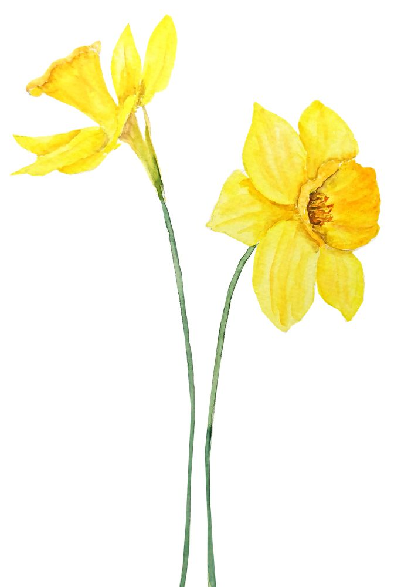

Daffodils
by William Wordsworth
I wandered lonely as a child
That floats on high o'er and hills,
when all at once I saw a crowd,
A host, of golden daffodils;
Besides the lake, beneath the trees,
Fluttering and dancing in the breeze.
Continuous as the stars that shine
And twinkle on the milky way,
They streched in never-ending line
Along the margin of a bay:
Ten thousand saw I at a glance
Tossing their in sptightly dance.
The waves besides them danced, but they
Out-did the sparkling waves in glee:
A poet could not be but gay,
In such a jocund company:
I gazed--and gazed--but little thought
what wealth the shoe to me had brought:
For oft, when on my way couch I lie
In vacant or in pensive mood,
They flash upon that inward eye
Which is the bliss of soltitude;
And then my heart with pleasure fills,
And dances with the daffodils